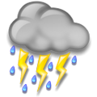

Temps de chien

Vite, un clavier, ils vont pas tarder à me retrouver. Mais tu dois savoir. Ça aboie dehors. Vite. Ouf, fausse alerte. Toute cette flotte, c’est eux. J’ai marché pieds nus dans le caniveau pour perdre les chiens. Je suis pas sûr que ça marchera, ils vont me retrouver. Pas de temps à perdre. J’ai découvert un truc incroyable. J’étais dans le train, ils étaient assis derrière moi. Ils travaillent pour eux. Ils discutaient, la pluie et le beau temps, détendus, normal. Et puis au détour d’une phrase, j’ai tout compris. La pluie et le beau temps, c’est ça le truc. Un truc énorme. Bon sang comment j’ai pu ne pas le remarquer ? Comment t’as pu ne pas le remarquer ? Ça crevait trop les yeux. Merde, une sirène ! Les flics sont avec eux, forcément. L’autre jour en passant devant Météo France j’ai vu trois uniformes qui contemplaient les écrans. Sûrs d’eux, du genre « Toi le soleil tu vas pas faire ton mariole longtemps ! » Mais comment j’ai pas deviné ?! Moi d’août, douze degrés, trois semaines sans voir le ciel. Merde quoi ! Tu vois rien ? Des records d’audience pour Fort Boyard, Dechavanne et l’Île de la tentation ! … Non ? Mais bon sang c’est les gars de la télé ! Au début ils ont commencé par diffuser la météo. À l’heure où tout le monde regarde, entre le JT et la rediff du Zidi. C’est pratique la météo, c’est pas une science exacte, tu dis ce que tu veux. Les gens acceptent. N’empêche que quand tu dis qu’il va faire un temps pourri, ben les gens ils prévoient pas de sortir dans le blizzard. Et même si finalement il fait beau, t’as toujours gagné dix pour-cent de fervents barricadés qui vont même pas entrouvrir les rideaux pour voir si la fille bossue qui fait le mistral à l’envers et qui confond Perpignan et Toulouse elle se serait pas des fois gourée sur le ciel aussi. Dix pour-cent, facile, et ils vont faire quoi s’ils sortent pas ? Ben regarder la télé. Attends, ya des pas dehors… ça s’éloigne… un gars de l’immeuble sans doute. Oui au début c’était gentil. Et puis ça suffisait pas dix pour-cent, yavait toujours des esprits forts pour entrouvrir les rideaux, et certains pour changer de programme et sortir. Alors ils ont passé la vitesse supérieure. Bon sang, je sais que tu vas pas me croire ! Dans leurs grands bunkers en verre là, qu’ils construisent tous au bord de l’eau, ben le temps maintenant ils le fabriquent ! Ils pulvérisent des tonnes d’eau et ils ont plein d’antennes braquées vers le ciel pour ioniser l’air et créer des nuages énormes. Ils font la pluie et le mauvais temps ! Maintenant la bossue de la météo elle peut même prévoir du soleil de temps en temps, de toute façon ils savent qu’en créant une bonne dépression ils vont clouer devant le poste même les plus courageux. On cogne à la porte… oh non, ils l’ont défoncée ! Adieu